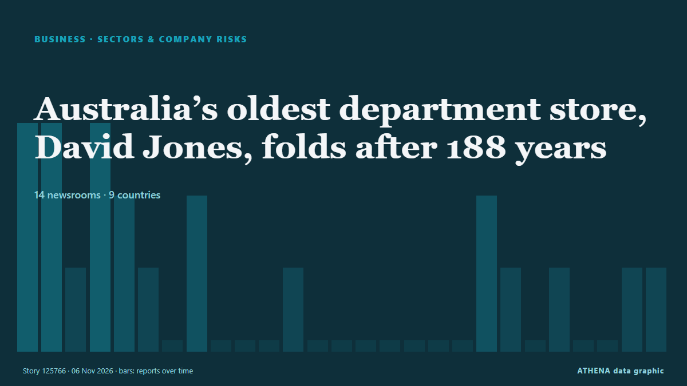

Secteurs et risques
SponsoriséPrésenté par  Cybernetics and Artificial Intelligence Lab Welcome to the Cybernetics and Artificial Intelligence Laboratory, established at the Department of Business Administration of the National and Kapodistrian University of Athens. The lab is headed by Professor Dimitrios Thomakos. The lab aims to do research that can be published in top venues. Our research uses tools and methods of Artificial Intelligence, and lies in the following areas: - Forecasting - Decision making - Cyber security - Finance We are always looking forward to collaborating with exceptional students!
Cybernetics and Artificial Intelligence Lab Welcome to the Cybernetics and Artificial Intelligence Laboratory, established at the Department of Business Administration of the National and Kapodistrian University of Athens. The lab is headed by Professor Dimitrios Thomakos. The lab aims to do research that can be published in top venues. Our research uses tools and methods of Artificial Intelligence, and lies in the following areas: - Forecasting - Decision making - Cyber security - Finance We are always looking forward to collaborating with exceptional students!
| 24 oct. | 0 |
|---|---|
| 25 oct. | 0 |
| 26 oct. | 0 |
| 27 oct. | 0 |
| 28 oct. | 0 |
| 29 oct. | 0 |
| 30 oct. | 0 |
| 31 oct. | 0 |
| 1 nov. | 1 |
| 2 nov. | 4 |
| 3 nov. | 8 |
| 4 nov. | 4 |
| 5 nov. | 2 |
| 6 nov. | 0 |
Les titres sont affichés en anglais, tels que publiés.

Australia’s oldest department store, David Jones, folds after 188 years
The brand's 38 physical stores and online site will continue to operate while receivers review its operations. de BBC Business
#SHOWBIZ: South Korean TV drama production at risk of collapse, warn industry groups
SEOUL: Twelve South Korean industry groups urged the government on Wednesday (Nov 4) to invest in and support the production of Korean television dramas, known as K-dramas, warning that the country’s… de New Straits Times
Two cops sue Shuhaily over alleged KLIA assault
KUALA LUMPUR: Datuk Seri Mohd Shuhaily Mohd Zain has been sued by two policemen who accused him of assaulting them at Kuala Lumpur International Airport (KLIA) in September. de New Straits Times
The World's Mayors Encounter Dynamic Ningbo
Ningbo, as the host city of the 2026 Global Mayors Dialogue, which opened on Tuesday, is seizing the chance to showcase its connectivity with the world. de CGTN (China)
Google Pixel 11, 11 Pro, and 11 Pro XL Sale: Save Up to $350
Upgrade to the smartest Android smartphones. de Wired
Allied Bank and Chevening join forces to provide fully funded degrees at leading UK universities
The UK Government’s Chevening programme and Allied Bank Limited (ABL) have launched a new partnership that will enable talented Pakistanis to pursue fully funded master’s degrees at leading UK… de Business Recorder
Kurtley Beale’s blunt revelation about his Test ambitions as he opens up on Wallabies recall
Kurtley Beale has opened up on his recall to the Wallabies squad and made a blunt revelation about his future Test ambitions. de Planet Rugby
Major automakers urge US Congress to pass permanent ban on Chinese vehicles
A group representing nearly all major automakers on Monday urged U.S. lawmakers to pass a permanent ban on Chinese vehicles when they return next week for a quick session after the midterm… de The Korea Times
Private sector pension savers to be given ‘simpler’ options to take an income
Guided retirement will require pension schemes to provide a default pension for savers approaching retirement. de Evening Standard (London)
Lebanon’s EDL Begins Cutting Power to Ministries, Municipalities and Public Institutions over Unpaid Dues
Lebanon's state power provider Electricite du Liban has begun cutting electricity to public institutions that have failed to pay their bills. de The National
Iulian Stanciu is selling Flanco electroretail-chain to Kotsovolos, part of the PPC Group
PPC Group announces that its 100% subsidiary Kotsovolos (Next Gen Retail Services Single Member) has signed an agreement for the acquisition of 100% of the shares of the Romanian technology and… de Business Review (Romania)
Turkish trade minister discusses closer ties with counterparts from Africa, Asia, Middle East
Talks cover $40B trade target with UAE, Egyptian business delegation’s visit to Türkiye in 2027 and opportunities for Turkish firms in Africa. de Anadolu Agency (English)
Blackstone’s Gray sees more AI equity fundraising ahead from major tech firms
Gray’s comments reinforce a theme running through this week’s news flow: the AI buildout is increasingly being financed by issuing shares, not just from cash flow and debt. de investingLive (ForexLive)
Youngone, FKI host Bangladesh delegation to boost business ties
Youngone Group and the Federation of Korean Industries hosted a high-level Bangladeshi delegation Monday in Seoul to explore new trade and investment opportunities/ The meeting, held at FKI Tower in… de Korea Herald